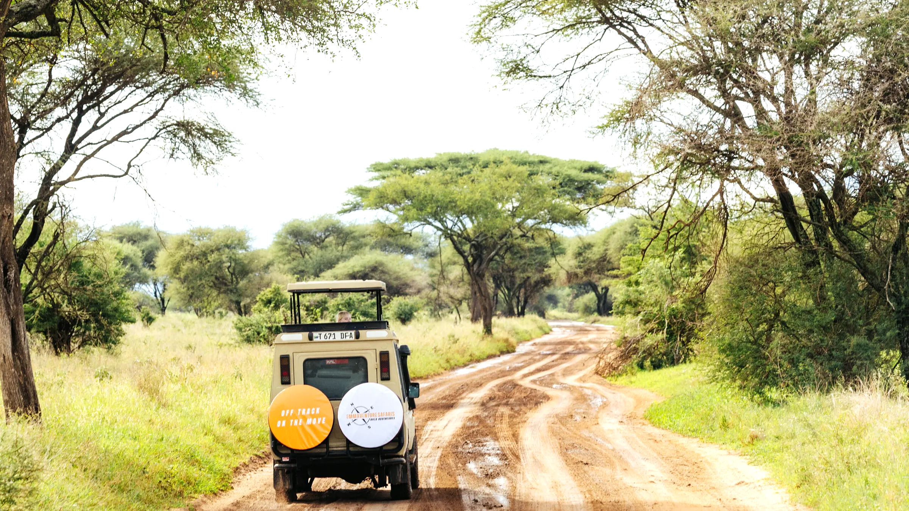
Driven by discovery
Timeless luxury journeys in Tanzania
Private safaris designed and personally hosted by Emmanuel and Dewi — from the plains of the Serengeti to the roof of Africa.
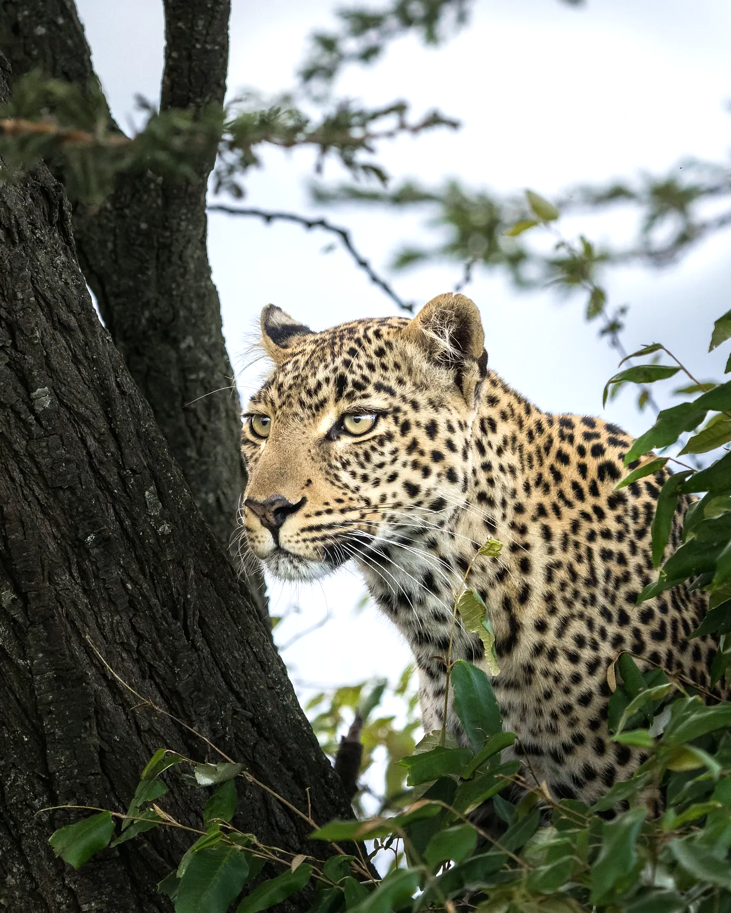
The Emmaventure philosophy
Three things every journey is built on
Context-Led
Context lies at the heart of our journeys, transforming fleeting moments into deep understanding.
Experience Facilitated
Every encounter is designed around active engagement, inviting you to be fully present.
Reflection Anchored
Guests are invited to uncovering deeper, often transformative insights.
Who we are
A husband and wife who host every journey themselves.
Emmanuel grew up at the foot of Kilimanjaro and has guided in Northern Tanzania for over ten years. Dewi came from the Netherlands, stayed, and now runs the planning. Between them they design and personally host every safari on this site.
- Based in
- Arusha, Tanzania
- Hosted by
- Emmanuel & Dewi
- Guiding since
- 10+ years
- We run
- Safaris · Kilimanjaro · Zanzibar
Signature journeys
Where people usually start
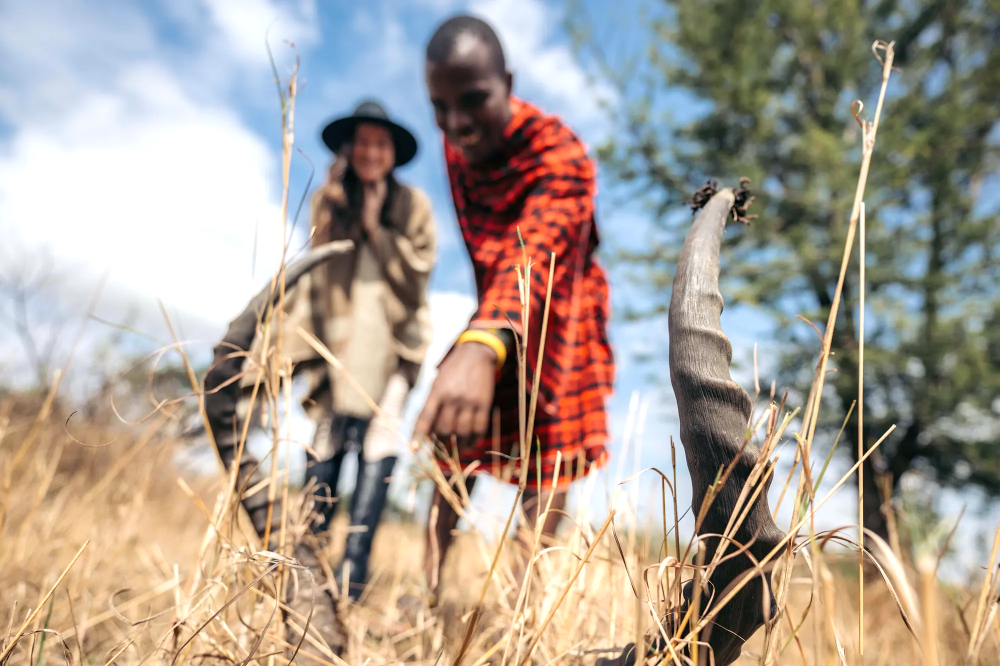
Small Group Luxury Safari
Join Emmanuel for a 7-day luxury adventure through Northern Tanzania’s most iconic landscapes, from Tarangire’s baobabs and the Ngorongoro Highlands to the endless plains of the Serengeti.
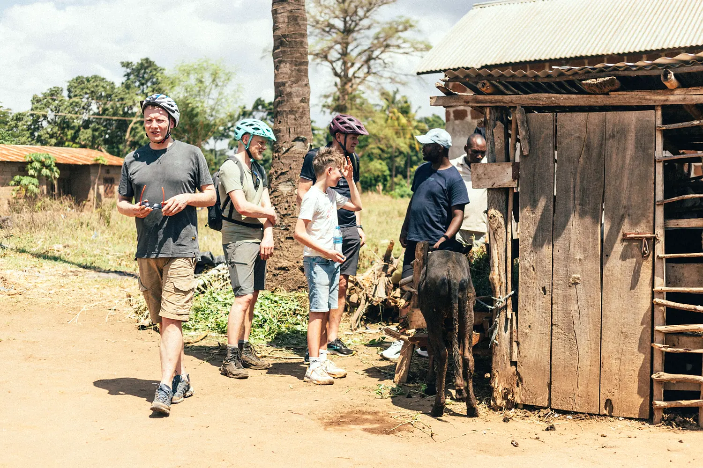
Soul of Tanzania Journey
An 11-day journey through Northern Tanzania for travellers seeking a meaningful blend of safari, nature, and deep connection with local life and culture.
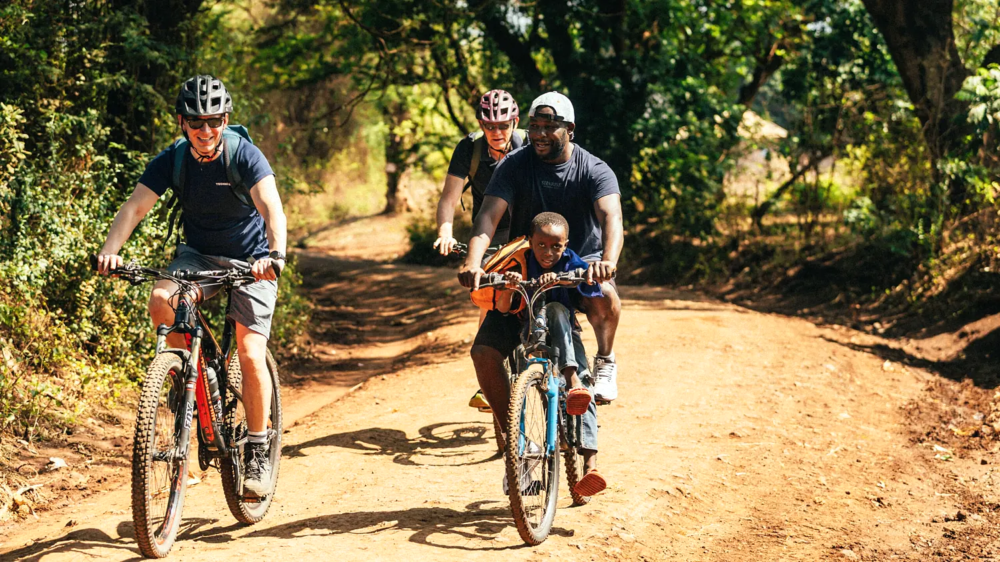
Heart of Tanzania Journey
A 9-day journey through Northern Tanzania, designed for travellers seeking a meaningful blend of safari, nature, and deep connection with local life and culture.
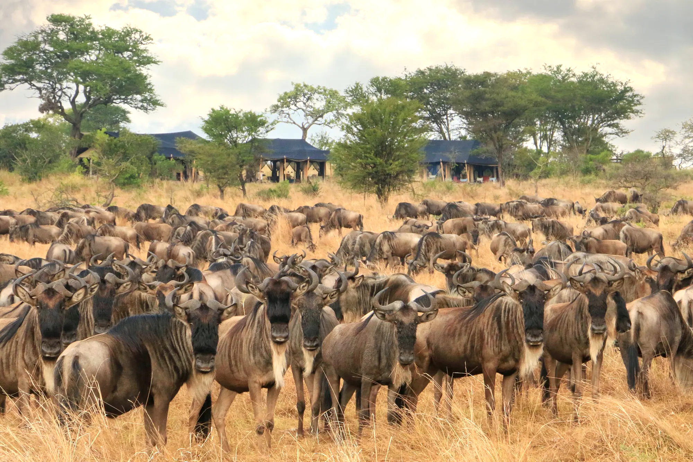
The Timeless Safari Experience
A 10-day safari through Northern Tanzania at a gentle, enjoyable pace. From the moment you arrive with VIP airport service, Emmanuel and Dewi are your hosts throughout.
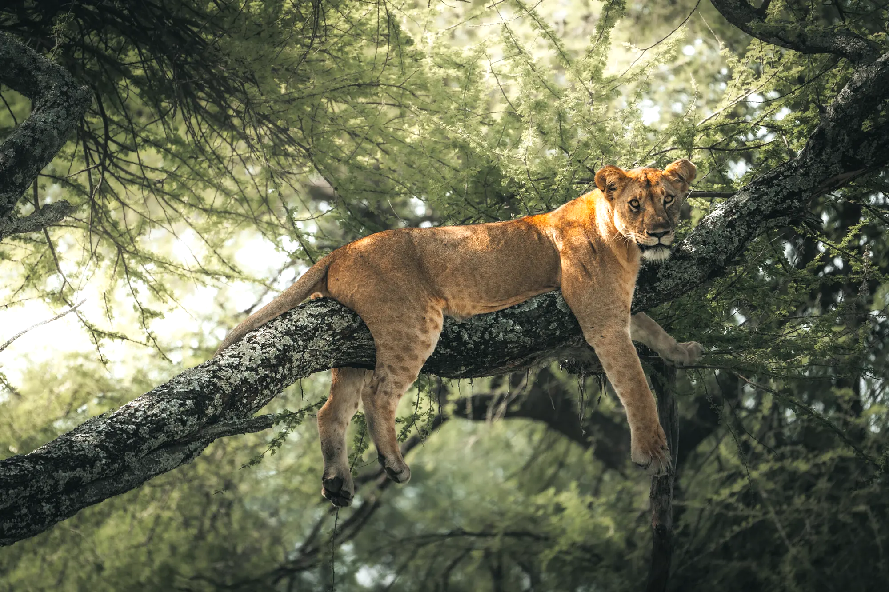
The Direct Wilderness Experience
A 7-day safari through Northern Tanzania, venturing straight into the heart of the wilderness from the moment you arrive.
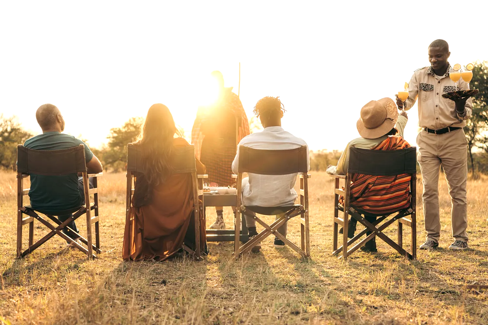
Great Migration — River Crossing
A 7-day Great Migration safari through Northern Tanzania, venturing straight into the heart of the wilderness for the river crossings.
Where you will go
Destinations
Serengeti National Park
Fourteen thousand square kilometres of plain, and the stage for the Great Migration.
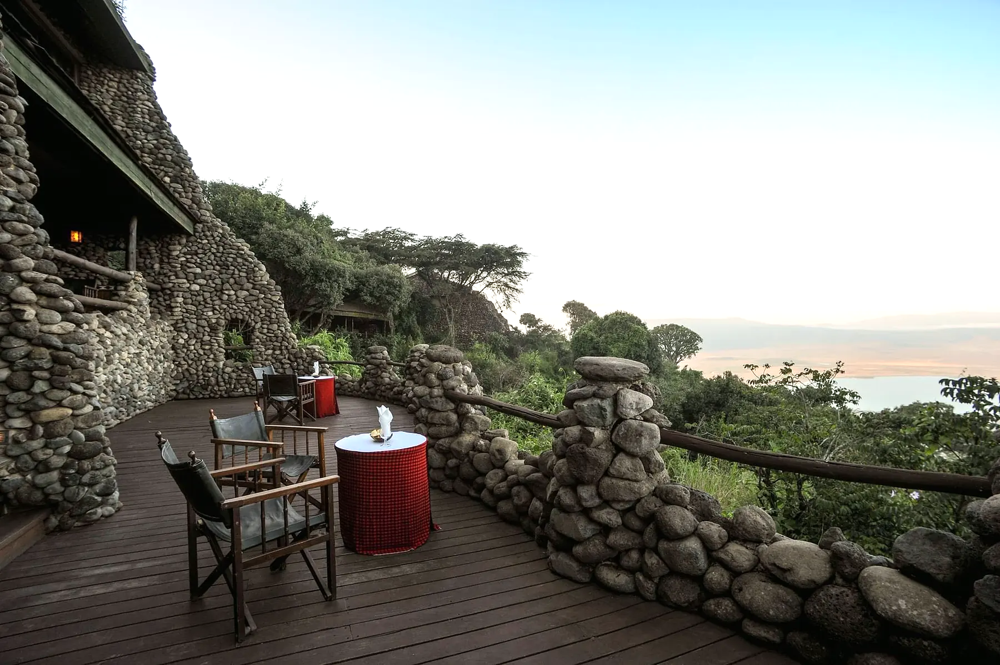
Ngorongoro Crater
A collapsed volcanic caldera holding roughly 25,000 large animals inside its walls.
Tarangire National Park
Baobab country along a river that draws the whole ecosystem in through the dry season.
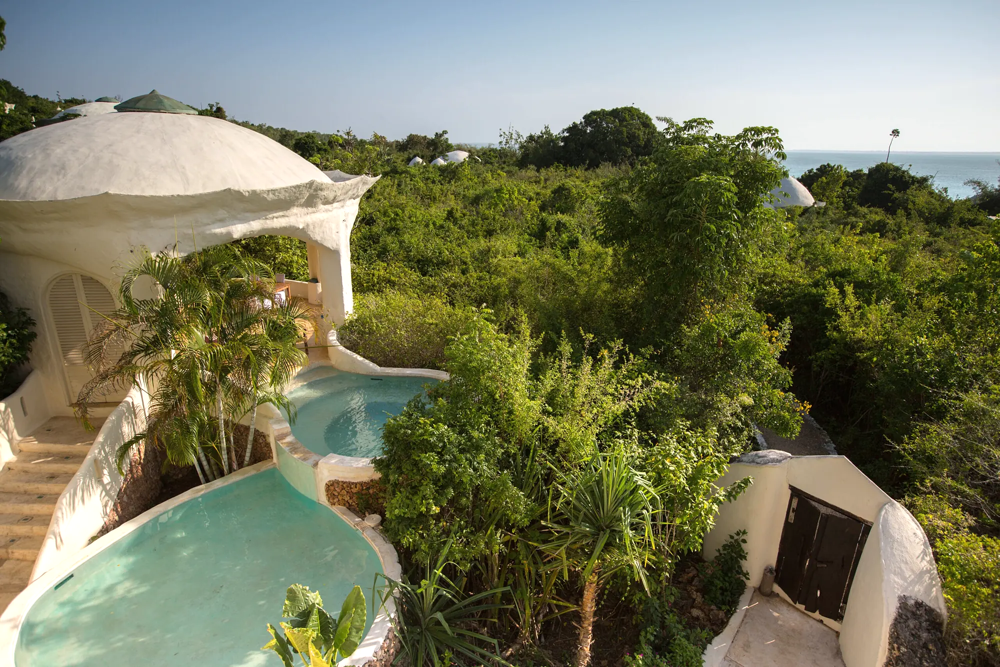
Zanzibar
A short flight from Arusha, and the natural second half of a Tanzania journey.
This is Tanzania
From their own camera
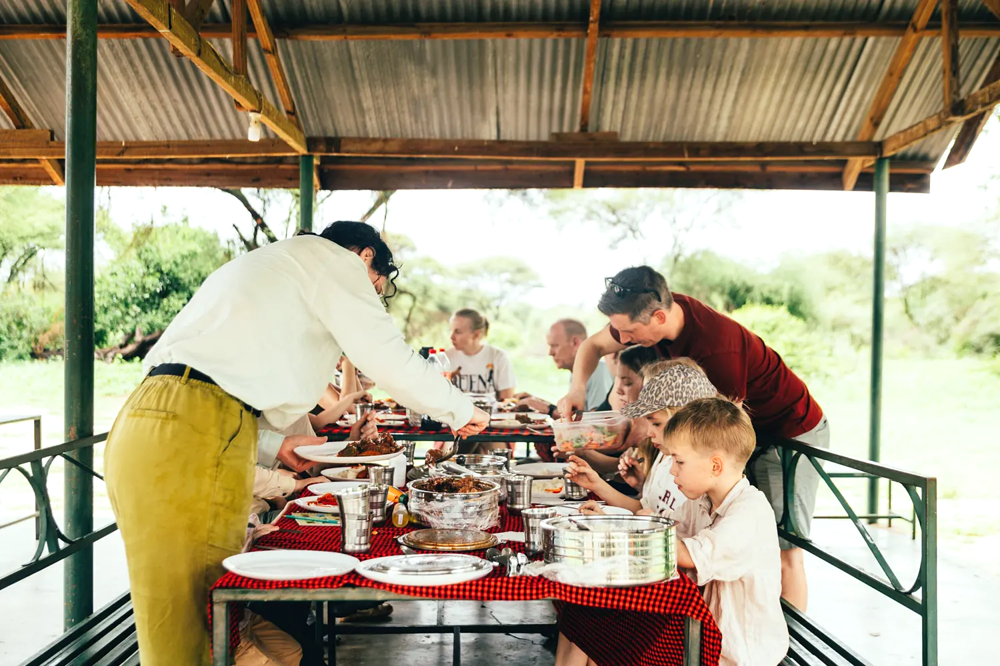
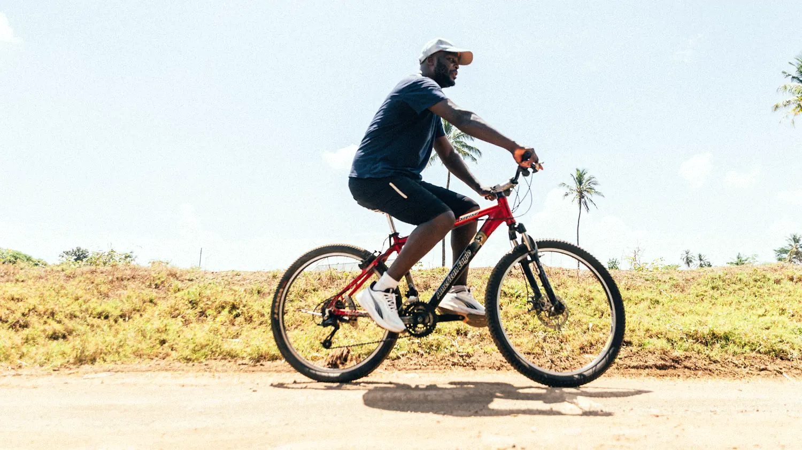
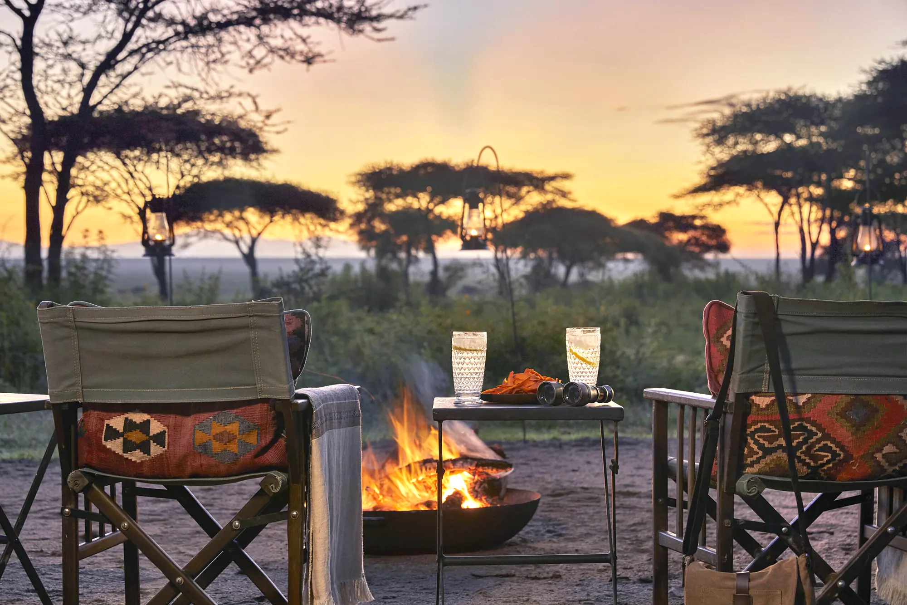
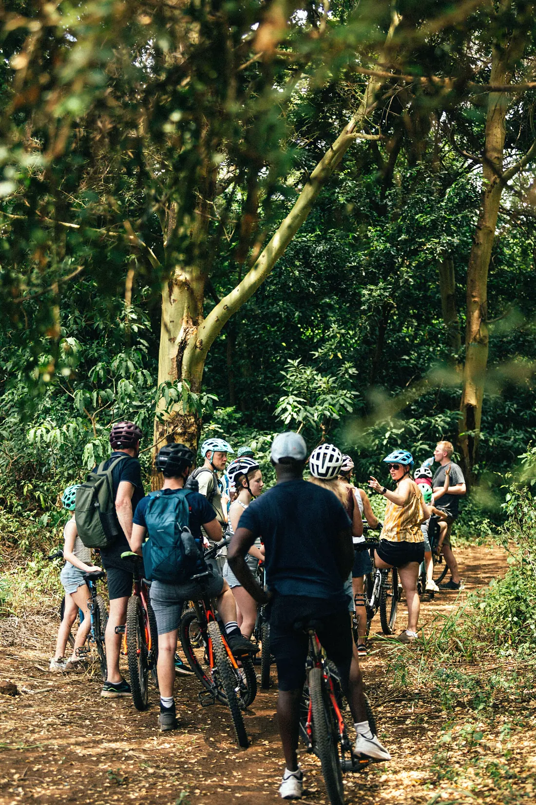
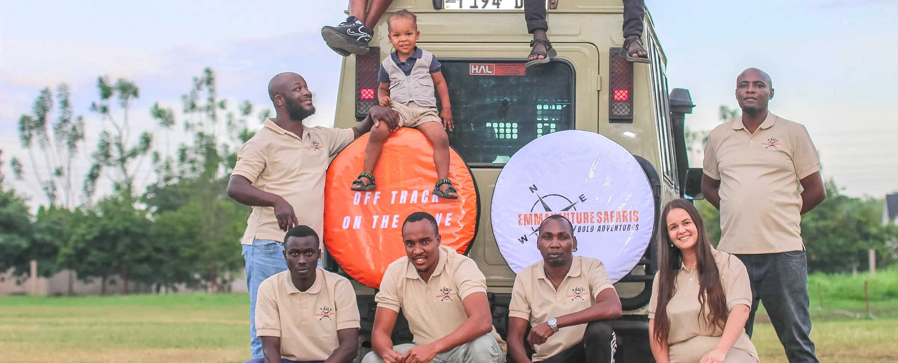
Common questions
Asked and answered
Marked up as FAQ data so answer engines can quote it directly.
Who is Emmaventure Safaris?
Where does Emmaventure Safaris operate?
What does a safari with Emmaventure cost?
Are the safaris private or group?
When is the best time to see the Great Migration?
Does Emmaventure arrange Kilimanjaro climbs?
How do I book or ask a question?
Let's design your journey
Tell Emmanuel and Dewi what you want from Tanzania.
Every journey starts with a conversation, not a booking form. WhatsApp gets a same-day response.